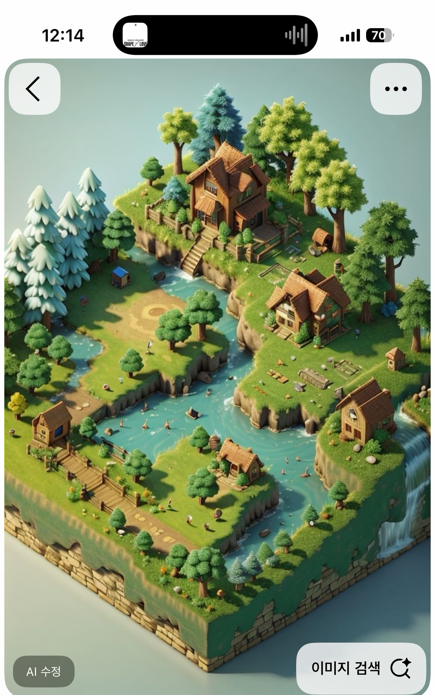
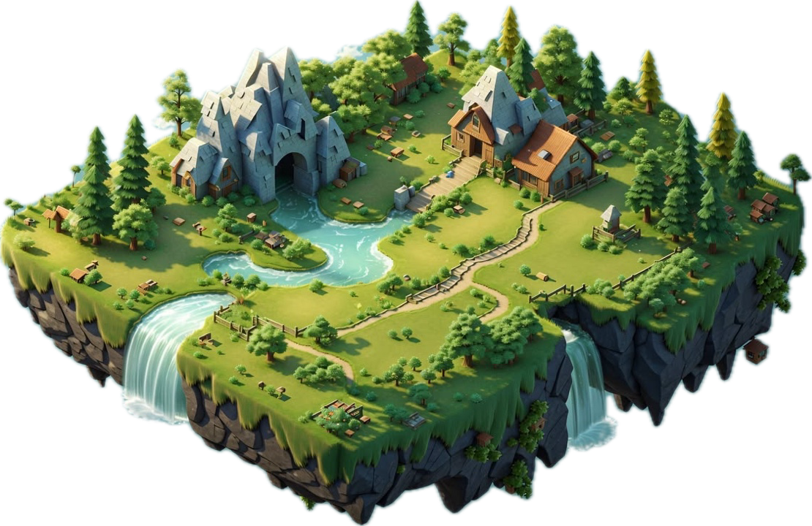

02 · Must Keep
반드시 유지
- 학생별 한 조각과 학급 3×3 퍼즐 결합 구조
TILE_SIZE = 22의 넓은 장기 배치 면적- 잔디 클릭, 캐릭터 이동, 배치 확인 흐름
- 정확한 레이캐스트 표면과 기존 충돌 검사
- 모바일 한 손가락 회전·핀치 확대와 데스크톱 조작
- 이미지 텍스처 없는 실제 Three.js 메시 모델
Salpim · 3D Island Visual Contract · v1
이 문서는 참고 이미지의 분위기를 현재 /island 장면에 옮기기 위한 구현 명세다.
GPT CLI는 이미지를 그대로 복제하지 말고, 아래의 형태·재질·카메라 규칙을 우선한다.
01 · References


02 · Must Keep
TILE_SIZE = 22의 넓은 장기 배치 면적03 · Must Avoid
04 · Geometry
암벽은 한 장의 매끈한 벽이 아니라 외곽선을 36–64개 구간으로 나누고, 각 구간의 하단 위치·밝기를 조금씩 바꾼다.
단, 상단 외곽과 클릭 표면은 기존 퍼즐 Shape를 공유해 결합 정확도를 보존한다.
05 · Art Direction
#89AA55#ABC76A#9A6843#6D7769#45534C#79C6C3#DCEEE5#F4D596모든 자연물은 MeshStandardMaterial 중심. 거칠기 0.82–0.96, 금속성 0. 암벽은 3–4개의 가까운 색을 구간별로 섞어 면 분할을 읽게 한다.
화면 좌상단의 따뜻한 태양광 + 청록 계열의 약한 반구광. 접촉 그림자는 선명하고 멀어질수록 부드럽게. 배경은 안개 낀 민트색.
직교 카메라 유지. 기본 방위각 38–45°, 고도 34–40°. 윗면 65–72%, 측면 28–35%가 보이도록 프레이밍한다.
중앙 배치 영역은 비워 두고 외곽 15%에만 풀, 꽃, 작은 돌을 드문드문 둔다. 장식은 섬보다 먼저 눈에 띄면 안 된다.
06 · Implementation Map
| 파일 | 역할 | 변경 방향 |
|---|---|---|
src/components/student/island/islandModel.ts |
절차적 메시 생성 | 깊은 암벽 본체, 얇은 흙 띠, 잔디 캡, 암석 면 분할 추가. 기존 surface 반환 계약 유지. |
src/components/student/island/IslandScene.tsx |
카메라·조명·렌더링 | 두꺼워진 하부가 프레임 안에 들어오도록 기본 카메라·target·shadow 범위만 조정. |
src/components/student/island/puzzleGeometry.ts |
퍼즐 외곽·배치 판정 | 가능하면 변경하지 않음. 시각 메시가 반드시 이 Shape를 원본으로 사용. |
src/components/student/island/__tests__/puzzleGeometry.test.mjs |
결합·충돌 회귀 | 기존 테스트를 통과해야 하며 시각 개선을 위해 판정 로직을 느슨하게 만들지 않음. |
07 · Copy-ready Prompt
이 저장소의 3D 섬을 개선해줘. 먼저 다음 파일을 읽고 현재 구조와 미완성 변경을 보존해: - AGENTS.md - docs/planning/island-3d-visual-brief.html - src/components/student/island/README.md - src/components/student/island/islandModel.ts - src/components/student/island/IslandScene.tsx - src/components/student/island/puzzleGeometry.ts 목표: 현재 섬은 얇은 퍼즐 판처럼 보인다. 퍼즐 결합 및 아이템 배치 기능을 그대로 유지하면서, 참고 이미지처럼 두껍고 입체적인 저폴리 디오라마 섬으로 바꿔라. 핵심 구현: 1. islandModel.ts에서 동일한 createPuzzleShape(edges)를 기준으로 잔디 캡, 얇은 흙 띠, 깊은 암벽 본체의 3단 구조를 만든다. 2. 암벽 본체는 전체 섬 폭의 약 12–18% 깊이로 보이게 하고, 하단 외곽은 상단보다 8–14% 안쪽으로 taper한다. 3. 암벽 측면은 36–64개 구간으로 나눠 하단 높이와 색을 약간씩 바꾼 저폴리 면으로 만든다. 랜덤은 seed 고정으로 매 렌더마다 같아야 한다. 4. 상단 Shape, 레이캐스트 surface, outline, 배치 좌표는 기존 계약을 유지한다. 아이템 배치 영역을 줄이지 않는다. 5. 중앙은 비우고 기존의 풀·꽃·돌 장식만 유지한다. 집, 산, 강, 폭포, 큰 나무는 추가하지 않는다. 6. 직교 카메라에서 윗면 65–72%, 측면 28–35%가 보이도록 IslandScene.tsx의 기본 target과 home 시점을 조정한다. 7. 따뜻한 좌상단 방향광, 청록색 반구광, 부드러운 접촉 그림자, 안개 낀 민트 배경을 유지한다. 8. 자연 재질은 roughness 0.82–0.96, metalness 0으로 둔다. 이미지 텍스처는 사용하지 않는다. 9. 정적 메시를 재질별로 병합하고, 기존 demand rendering 및 dispose 로직을 깨지 않는다. 완료 조건: - 모바일 세로 화면에서 암벽 두께가 즉시 보이고 섬이 화면 밖으로 잘리지 않는다. - 데스크톱에서도 섬 중심과 캐릭터 말풍선이 가려지지 않는다. - 나의 섬과 우리 반 퍼즐 모드 모두 정상 렌더링된다. - 클릭 배치, 캐릭터 이동, 확인/종료 흐름이 유지된다. - node --test src/components/student/island/__tests__/puzzleGeometry.test.mjs - npx tsc --noEmit - npx eslint src/components/student/island src/components/student/IslandBoard.tsx src/app/island - npm run build 작업 전후 /island 화면을 확인하고, 변경 파일과 시각적으로 달라진 점을 짧게 보고해.
08 · Acceptance